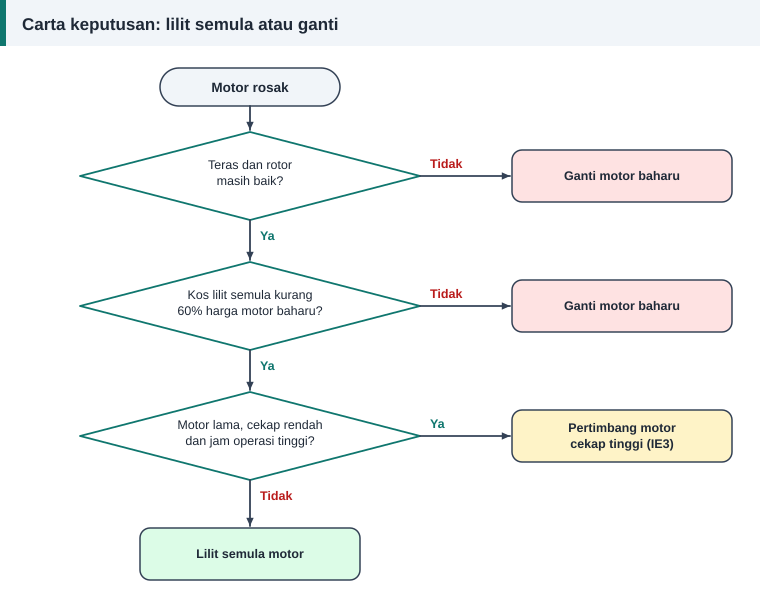

Kos dan kecekapan
Lilit Semula atau Ganti Baharu? Cara Membuat Keputusan
Motor rosak di lantai bengkel, dan pemiliknya mahukan jawapan segera: baiki atau beli baharu? Jawapan yang baik datang daripada empat soalan, bukan daripada tekaan.


Empat soalan
1. Adakah teras dan bahagian mekanikal masih baik?
Teras yang terlebur, laminasi longgar, rotor retak atau perumah galas yang haus menaikkan kos dan menjejaskan hasil. Jika teras rosak, lilitan semula jarang berbaloi.
2. Berapa kos lilit semula berbanding motor baharu?
Panduan Jabatan Tenaga Amerika Syarikat memberi petua ini: jika kos lilit semula melebihi 50% hingga 65% harga motor baharu yang cekap tenaga, belilah motor baharu. Panduan yang sama menyatakan motor bukan khas di bawah 15 kuasa kuda, iaitu kira-kira 11 kW, hampir selalu lebih baik diganti. Motor di bawah 40 kuasa kuda yang berusia lebih 15 tahun pula biasanya lebih baik diganti, terutamanya jika pernah dililit semula. Semua ini petua kasar, bukan peraturan.
3. Berapa jam motor itu berjalan setahun?
Bagi motor yang berjalan beribu-ribu jam setahun, kos elektrik sepanjang hayatnya jauh melebihi harga belinya. Beberapa mata peratus kecekapan menjadi jumlah wang yang besar.
4. Berapa lama motor ganti boleh diperoleh?
Henti kerja mungkin lebih mahal daripada motor itu sendiri. Motor piawai boleh dibeli terus dari rak, tetapi motor khas mungkin mengambil masa berminggu-minggu.
Contoh kiraan penjimatan tenaga
Motor 2.2 kW berkecekapan 82% berjalan 4000 jam setahun. Motor baharu yang setara berkecekapan 87%.
| Perkara | Motor lama dililit semula | Motor baharu cekap tinggi |
|---|---|---|
| Kecekapan | 82% | 87% |
| Kuasa masukan pada beban penuh | 2.68 kW | 2.53 kW |
| Tenaga setahun pada 4000 jam | 10 732 kWh | 10 115 kWh |
| Beza tenaga | – | 617 kWh kurang |
Darabkan beza tenaga dengan tarif elektrik anda untuk mendapat nilai wang. Pada tarif contoh RM 0.40 sekilowatt-jam, itu kira-kira RM 247 setahun. Bandingkan jumlah ini dengan beza harga antara motor baharu dan kos lilit semula.
Bila lilit semula jelas lebih baik
- Motor besar, kerana kos lilit semula hanya sebahagian kecil daripada harga baharu.
- Motor khas dengan rangka luar biasa, voltan khas atau aci tersuai.
- Motor yang sudah cekap tinggi dengan teras yang baik. Kajian menunjukkan kecekapan dikekalkan jika amalan baik diikuti.
- Motor yang jarang digunakan, kerana penjimatan tenaganya kecil.
Bila ganti lebih baik
- Motor kecil piawai yang murah.
- Motor lama berkecekapan rendah dengan jam operasi yang tinggi.
- Motor dengan teras rosak, atau yang pernah dililit semula dengan buruk.
- Motor yang terlebih saiz untuk bebannya. Kerosakan ialah peluang memilih saiz yang betul.
Jangan lupa punca kegagalan
Motor baharu juga akan terbakar jika punca asal tidak dibetulkan. Baca punca belitan motor terbakar sebelum membuat keputusan.
Rujukan dan bacaan lanjut
Artikel berkaitan
Adakah Lilit Semula Mengurangkan Kecekapan Motor? Mitos dan Fakta
Ramai percaya setiap lilitan semula membuang beberapa peratus kecekapan. Kajian bebas menunjukkan sebaliknya apabila amalan baik diikuti. Lihat lima mitos dan fakta di sebaliknya.
Mengapa Belitan Motor Terbakar: Lapan Punca dan Cara Mengenalnya
Belitan yang hangus menyimpan petunjuk tentang puncanya. Baca corak kerosakan untuk membezakan beban lampau, hilang fasa dan litar pintas supaya motor tidak terbakar semula.
Apa Itu Lilitan Semula Motor dan Bila Ia Diperlukan
Lilitan semula menggantikan belitan kuprum yang rosak supaya motor berfungsi seperti asal. Kenali bahagian motor, tanda kerosakan belitan dan proses asasnya di sini.